Delo 0.2.0 — наброски
Снято с настоящего виджета: сборка 0.1.9 в тестовой сессии, живое стекло, синтетические задачи на нейтральной подложке. Новые элементы собраны из существующих частей интерфейса. Это наброски, в коде приложения их ещё нет.
Главный экран — как сейчас
С этим сравнивается каждый набросок ниже. После 0.2.0 он должен выглядеть так же (проверка V27).
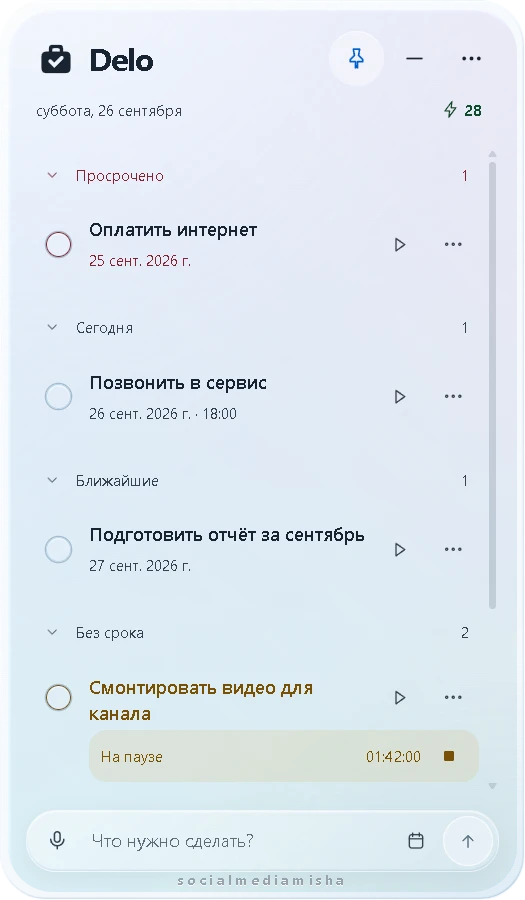
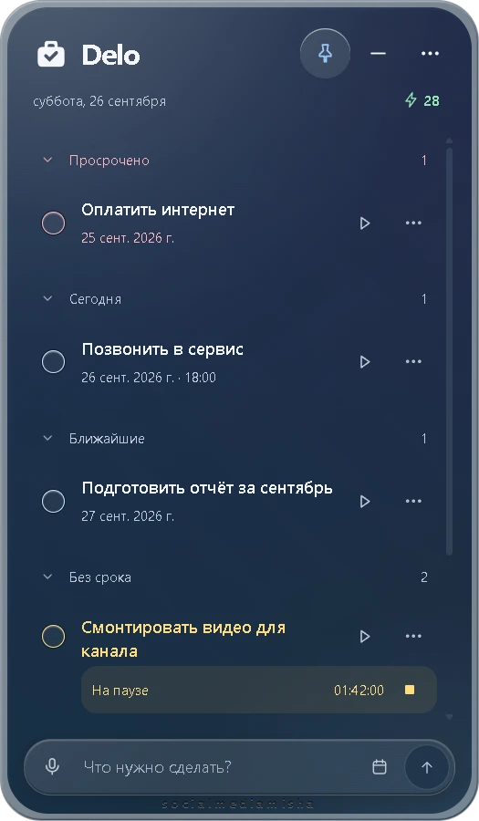
Забытый таймер
F03 · П9Появляется только после простоя с идущим таймером, когда вы вернулись к компьютеру. Одно нажатие — и сообщение исчезает.
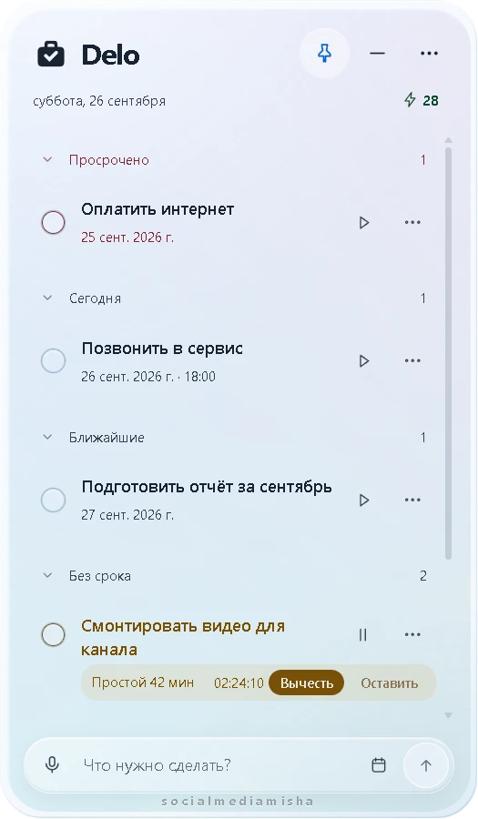
Вопрос стоит там, где идёт время. Высота строки та же, список не сдвигается.
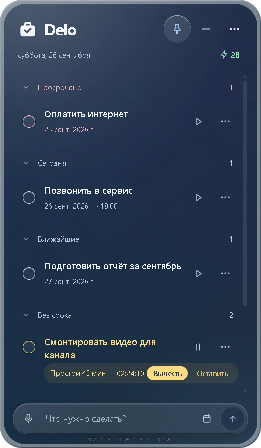
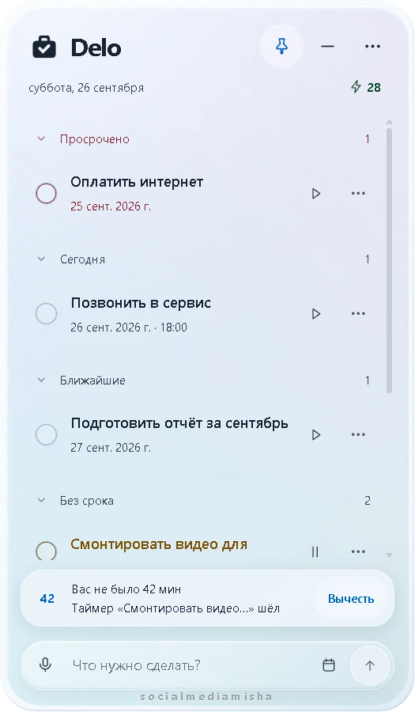
Тот же вид, что у отмены удаления. Заметнее, но на время отнимает место у списка.
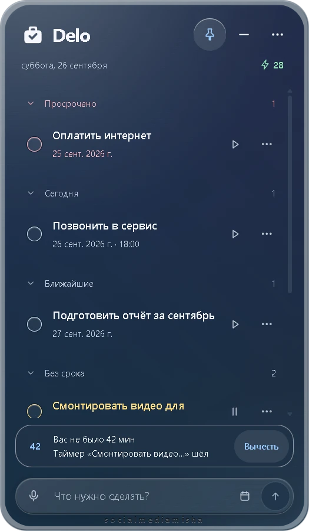
Даты прямо в тексте
T08 · П8Видно только во время набора: «завтра в 15:00» распознаётся до сохранения, ✕ отменяет распознавание. После Enter от подсказки не остаётся следа.
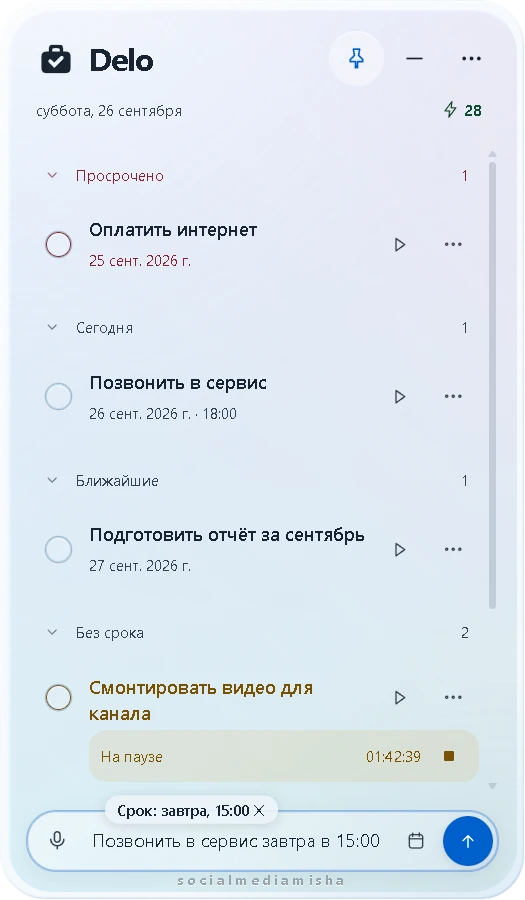
Текст задачи остаётся в одну строку.
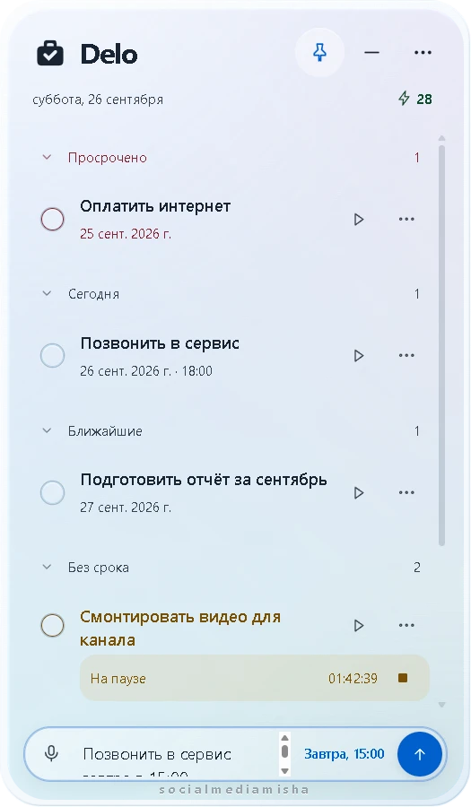
Без новых элементов, но поле ввода сжимается и текст переносится.
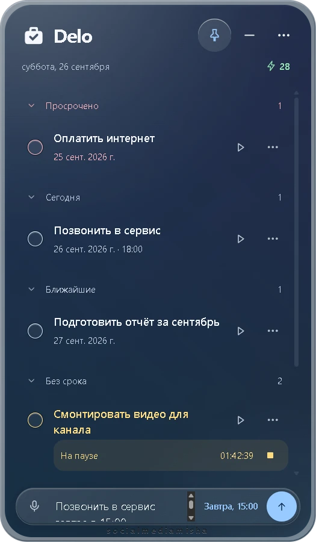
Статистика времени
F04 · П10Пункт «Время» в меню «⋯» открывает лист, как у архива. На главном экране ничего не добавляется.
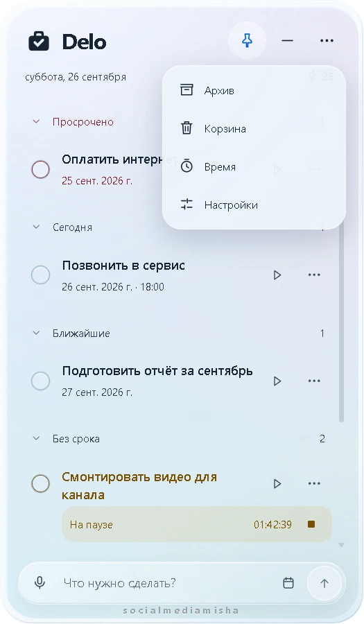
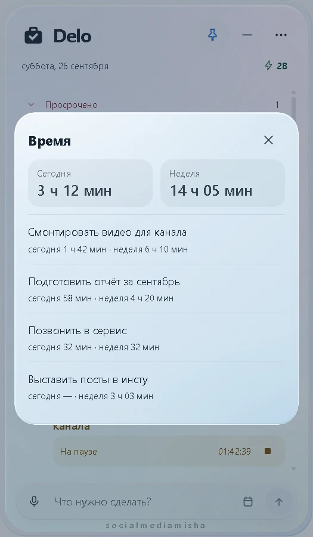
Сегодня и неделя, ниже задачи по убыванию.
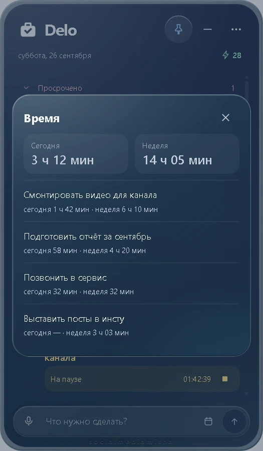
Поиск в архиве и корзине
A05Поле появляется только внутри листа архива или корзины.
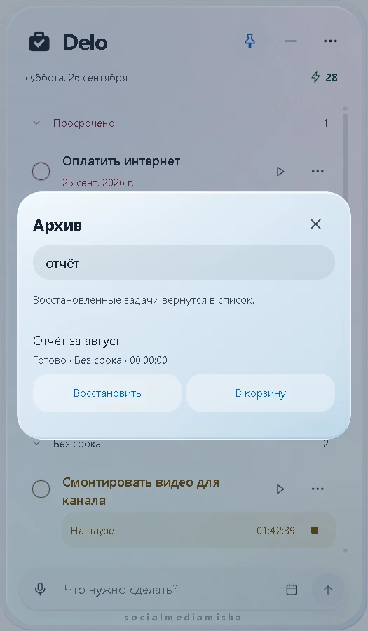
Напоминание перед сроком
T07 · П12Приходит как обычное уведомление Windows. В виджете только строка в настройках.
Макет: настоящий вид задаёт система.
Настройки: всё остальное
F05 · N12 · N13 · T07 · F03Сочетание паузы таймера, экспорт и импорт, проверка обновлений, напоминание и порог простоя. Всё добавляется в лист настроек и обведено пунктиром.
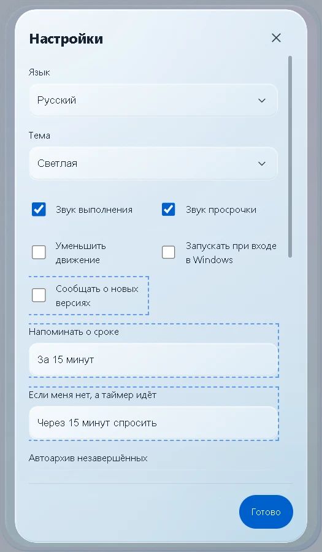
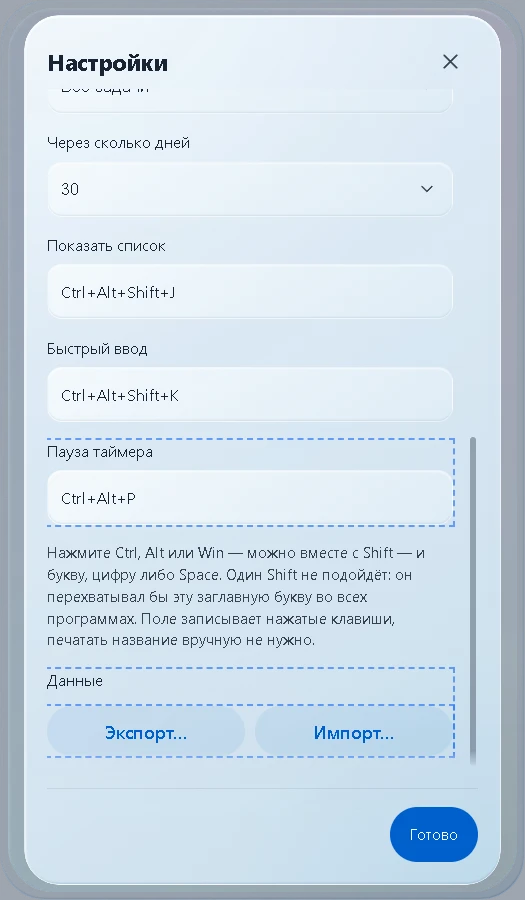
Макет. Только если проверка включена.
Цвет «В архив»
П13 · решеноРешено 26 сентября: остаётся тёмно-оранжевым, как сейчас. Цвет показывает, что это не обычное действие. Другие варианты оставлены для истории.
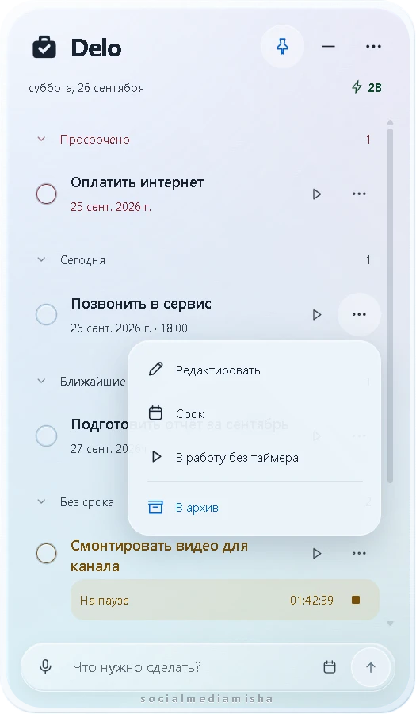
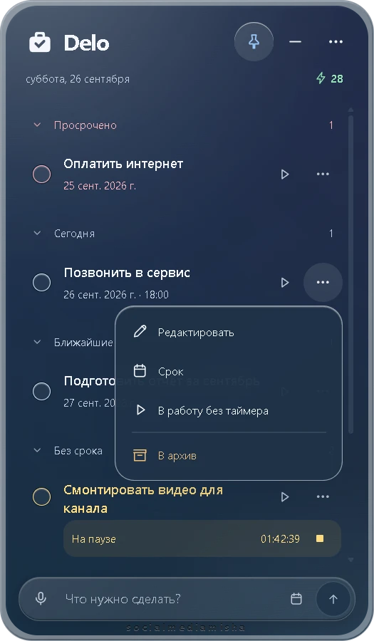
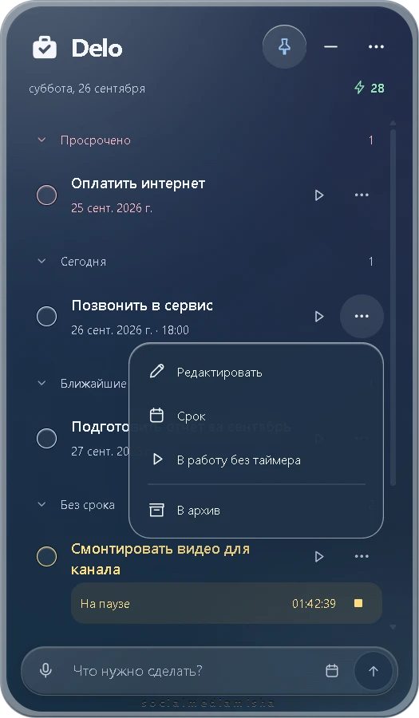
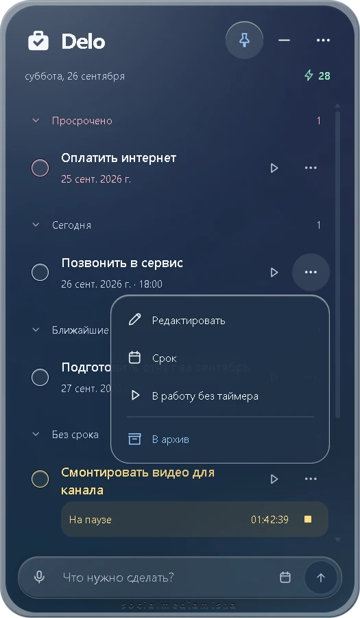
Решения 26 сентября
- Забытый таймер — вариант A: вопрос в полосе таймера задачи. Порог 15 минут, по умолчанию «вычесть».
- Даты в тексте — вариант B: подсказка над строкой ввода во время набора.
- Статистика — «сегодня» и «неделя», без месяца.
- Напоминание — за 15 минут; для сроков без времени — утром дня срока.
- Пауза таймера — Ctrl+Alt+P, по умолчанию выключено.
- «В архив» — остаётся тёмно-оранжевым.